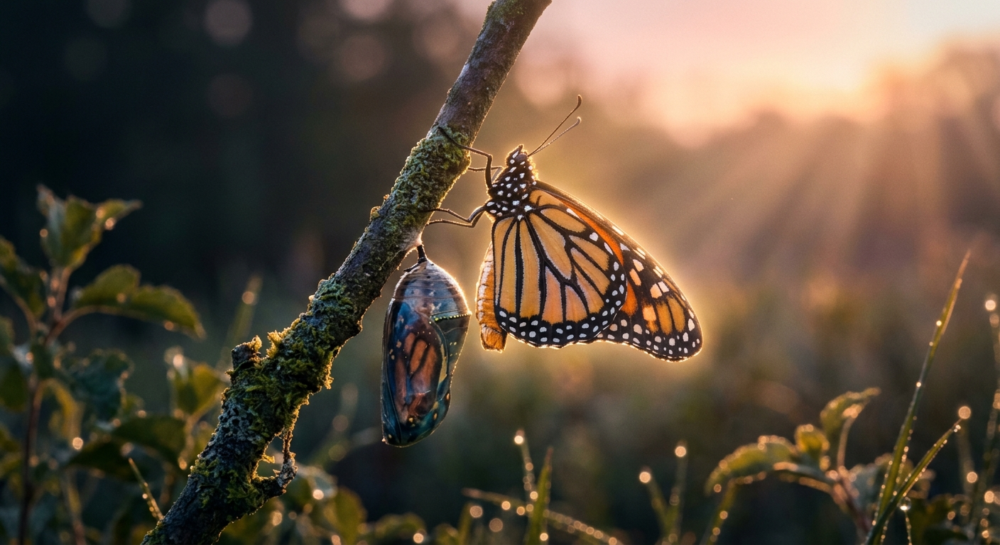

Metamorphosis
Metamorphosis is a poem about courage, transformation, and the freedom that comes from releasing long-held emotions into the world.
After years of silence, hidden feelings, and an inner struggle, the Butterfly finally lays down her armor, removes her
mask, and allows her truth to take flight.
Trusting the Divine with what lies beyond her control, she begins to reclaim her peace and energy. Though she has
emerged from her cocoon with newfound courage, a flickering light of hope remains in her heart. That hope belongs to her
Lion, the king of her heart, whom she wishes to find his way home.
This poem captures the delicate balance between letting go and holding on to hope, surrendering to the Divine while
allowing love to remain a part of one's story. Sometimes, metamorphosis does not mean forgetting the past. It means
finding the courage to spread your wings and embrace the freedom to become who you were always meant to be.
🎵 "beautiful-and-emotional-solo-violin--ep.3" - iamNOP! (Pixabay Music)
